New diagnostic: Why the 22 dark GTs are uncovered — actual stage trace and crops
The default has 36/73 complete GT coverage (>=95%), two partial GT overlaps and 35 GTs with no overlap. Strict containment is also 36/73. Partial overlap is not a verified detection. Grouped outputs have no positive-area overlaps on all 12 training images; the unmerged panel deliberately remains an overlapping diagnostic control.
The median eligible area ratio is 259.68 and only 3/73 GTs satisfy >=95% coverage with area ratio <=4. This demonstrates excessive background despite cleaner-looking grouped output. Absolute oversized flags (>25% image area) do not capture every box that is enormous relative to tiny GT.
The optional tree-context heuristic rejects 12 anchors, loses/gains zero covered GTs, and changes mean ROI count from 6.83 to 7.00 because deleting connecting support can split groups. There is no vegetation/false-positive ground truth to certify the rejected anchors as trees. The tree problem is not proven solved.
Dark-only extraction gains one GT overall, but no additional dark GT rectangles: 24/46 are covered with and without the option. These brightness groups use mean GT V<0.35, not verified day/night labels. Dark-subset median area ratio worsens from 257.99 to 6773.65. The option is not enabled by default and has not demonstrated better dark-target detection.
V1/V2/V3 remain independent. Official test data and classifiers are untouched. See README for rules, complete limitations and further work.
Training development sample only; supplied GT is unverified and can include background/groups. No classification, intensity or precision/F1. GT is never supplied to image-specific proposal generation.
Partial means positive overlap below 95% GT coverage, not a verified detection. Large/context GT boxes remain unmodified; no semantic group labels are invented. The default isolates grouping/diagnostic changes. Tree-filter-only and dark-enhance-only are independent ablations, not combined defaults.
Green and blue refer to HSV pixel membership, not semantic background masks. All intersecting candidate groups collapse into bounding rectangles, including envelope overlaps. Background is rechecked; oversized groups are flagged rather than split back into overlapping boxes. Compact area ratios use the smallest eligible ROI for each covered GT; uncovered GT has no ratio.
Default: 49.3% GT coverage >=95%, 49.3% strict containment, 6.8 ROIs/image. Median/p90 compact area ratio at >=95%: 259.68/683.75. Merging reduces 498.5 unmerged ROIs/image but makes compact ROIs larger. The green/blue gate rejects 0 pre-merge candidates in this run; do not assume a filtering benefit. Partial GT overlaps: 2; no overlap: 35. Oversized grouped ROIs/image: 0.00. Grouping removes intersecting outputs but may join multiple objects and much background. These settings are provisional; the small, imbalanced training sample cannot establish an optimum. Tree-only: rejected 12 anchors; 49.3% GT >=95%, 7.0 ROIs/image. Dark-only: 50.7% GT >=95%, 5.0 ROIs/image; extra overlap/coverage is not proof of correct background rejection or improved night detection.
| method | gt_boxes | partial_gt_boxes | no_overlap_gt_boxes | compact_coverage_95_area_le_4 | gt_coverage_95 | gt_coverage_100 | iou_05 | area_ratio_95_median | area_ratio_95_p90 | area_ratio_100_median | mean_roi_count | mean_runtime_seconds | mean_oversized_rois | rejected_anchor_count | lost_vs_no_filter_covered_95 | lost_vs_no_filter_covered_100 |
|---|---|---|---|---|---|---|---|---|---|---|---|---|---|---|---|---|
| no_background_filter | 73 | 2 | 35 | 0.041 | 0.493 | 0.493 | 0.014 | 259.678 | 683.754 | 259.678 | 6.833 | 0.203 | 0.000 | 0 | 0.000 | 0.000 |
| green_40 | 73 | 2 | 35 | 0.041 | 0.493 | 0.493 | 0.014 | 259.678 | 683.754 | 259.678 | 6.833 | 0.197 | 0.000 | 0 | 0.000 | 0.000 |
| green_blue_50_unmerged | 73 | 7 | 35 | 0.356 | 0.425 | 0.411 | 0.425 | 1.599 | 11.537 | 1.947 | 498.500 | 0.198 | 0.000 | 0 | 5.000 | 6.000 |
| green_blue_50 | 73 | 2 | 35 | 0.041 | 0.493 | 0.493 | 0.014 | 259.678 | 683.754 | 259.678 | 6.833 | 0.197 | 0.000 | 0 | 0.000 | 0.000 |
| tree_filter_only | 73 | 2 | 35 | 0.041 | 0.493 | 0.493 | 0.014 | 259.678 | 683.754 | 259.678 | 7.000 | 0.209 | 0.000 | 12 | 0.000 | 0.000 |
| dark_enhance_only | 73 | 2 | 34 | 0.014 | 0.507 | 0.507 | 0.000 | 913.662 | 15322.226 | 913.662 | 5.000 | 0.211 | 0.167 | 0 | 0.000 | 0.000 |
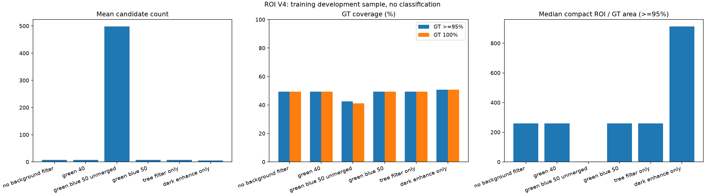
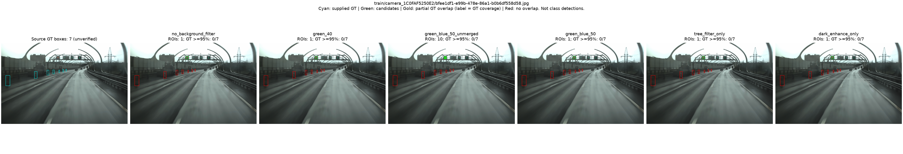
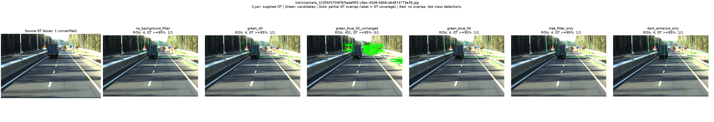
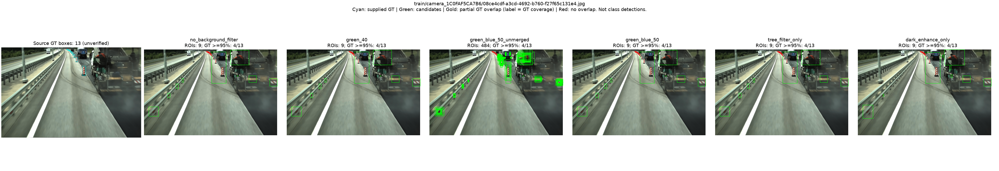
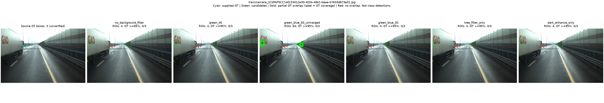
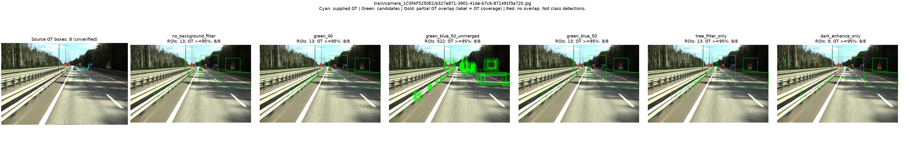
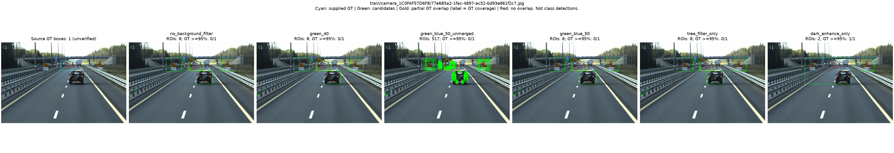
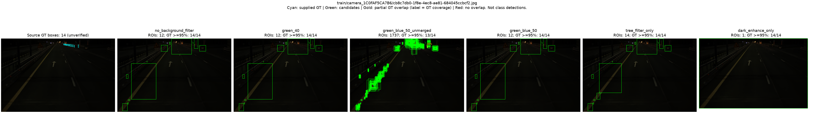
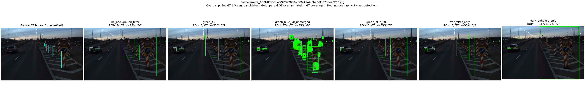
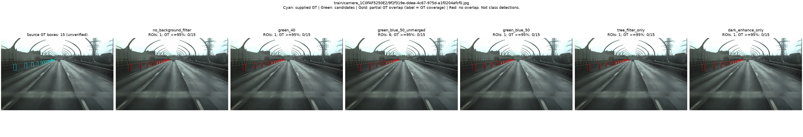
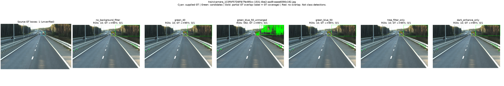
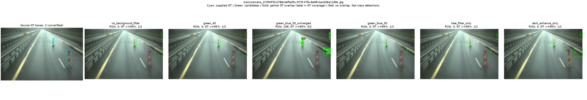
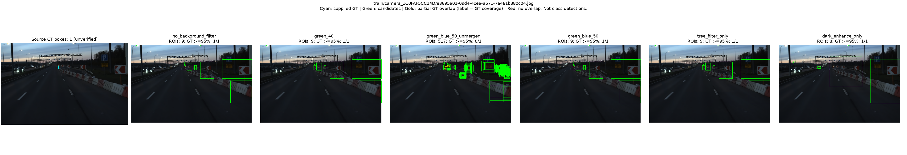